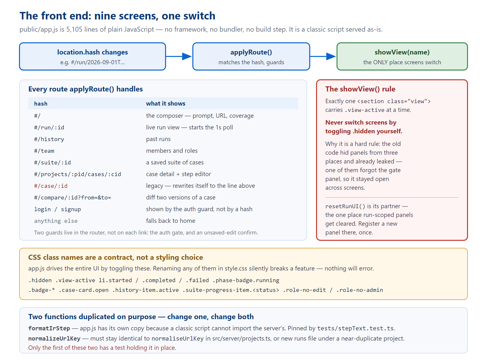

Five files, no framework, no build step
public/app.js is a single 235 KB classic script — 5,105 lines and about 124 top-level functions. Cataloguing all 124 would be unreadable and would go stale with the next commit.
// --- section banners, naming the important functions in each. Then it covers the two things that will actually break if you get them wrong: the CSS class contracts and the showView() rule.
[[TOC]]
| File | Size | What it is |
|---|---|---|
index.html | 17.8 KB 350 lines | The static shell. Nine view sections, the modals, the sidebar, the top bar. |
app.js | 235 KB 5,105 lines | The entire application. Session, routing, rendering, the gate, the step editor. |
style.css | 80 KB | The visual system. A single light theme. |
icons.js | 4.8 KB | Inline SVG icons on a 24×24 stroke grid, drawn with currentColor. |
preview.js | 9.4 KB | A development-only fixture harness. Inert unless the page is loaded with ?preview=states. |
index.html loads three classic scripts in order and Express serves them raw. That single fact explains several things that otherwise look like bad decisions — most importantly why two functions are duplicated between the server and the browser (§7). A classic script cannot import anything.
Every screen is a <section class="view" data-view="…">. Exactly one carries .view-active at any moment.
| data-view | Markup | What it is |
|---|---|---|
login | static | Sign-in form. |
signup | static | Registration form. |
home | static | The composer: prompt, URL, coverage selector, template chips. |
run | static | The live run screen. By far the densest region of the HTML. |
suite | JS-rendered | A saved suite of cases. |
case | JS-rendered | Case detail and the step editor. The largest region of app.js. |
compare | JS-rendered | Diff two versions of a case. |
history | JS-rendered | Past runs. |
team | JS-rendered | Members and roles. |
PROJECT_OVERVIEW.md. That document says there are six views and that suite, case and compare are "reachable stubs with no content… deliberate, not an oversight."
app.js at "~4400 lines" (it is 5,105) and says the UI uses Server-Sent Events (it does not — see §4). Treat its frontend section as unreliable; the phase reports under docs/phases/ are accurate.

Figure 1 — hash routing, the single switching function, and the contracts that hold it together.
Routing is location.hash. No server routes are involved — everything is one page.
| Hash | Action |
|---|---|
#/ | Home. Also the fallback for anything unrecognised. |
#/run/:id | Run view, and starts the poll loop if the ID changed. |
#/history | Run history. |
#/team | Team management. |
#/suite/:id | A suite and its cases. |
#/projects/:projectId/cases/:caseId | The canonical case route. |
#/case/:id | Legacy. Looks up the case's project, then rewrites the URL in place so old bookmarks keep working. |
#/compare/:id?from=&to= | Version diff. |
showView(), never by toggling classes directly.restoringHash flag makes a declined navigation restore the previous hash without poisoning the next one. A separate beforeunload handler covers reload and tab-close, which the in-app guard cannot see.showView() ruleThis is a hard rule in the project, and the comment in the source is the authority. Paraphrasing it:
showView() is the only thing that switches screens. Never toggle .hidden yourself to change views.
resetRunUI() — the one and only place run-scoped panels are cleared. Registering a new panel is therefore a one-line change in one function, rather than three that drift apart.
Note the nuance: .hidden is still the correct mechanism for things that are not views — the scrim, the toast, the screenshot grid, the credential modal. The rule is about switching screens.
There is no api() wrapper around everything. The real mechanism is a window.fetch monkey-patch installed at start-up:
const rawFetch = window.fetch.bind(window);
window.fetch = function (input, init) { /* inject Authorization on same-origin requests */ };
One wrapper instead of about twenty call sites. Two details matter:
location.origin, so a token can never leak to a third-party host.<img src> and <video src> on the artifact route cannot carry a header. (Volume 3, §3 covers the server half of this.)On top of that sits api(path, init) — a thin helper that turns 204 into null, parses JSON, and throws the server's error message on failure. The newer library and team screens use it; the older run and gate code calls fetch directly.
role-no-edit and role-no-admin on <body>. So the default state (no class) is exactly the pre-authentication behaviour, which means no flicker on load while identity is still being fetched.
connectToRun(runId) is the function that drives the live run screen.
let pollGeneration = 0;
async function connectToRun(runId) {
const generation = ++pollGeneration;
while (generation === pollGeneration) {
const res = await fetch(`/api/runs/${runId}/state`);
// … slice off events already seen, feed each to applyEvent() …
if (done) return;
await new Promise((r) => setTimeout(r, 1000));
}
}
EventSource appears nowhere in public/ as code — the only occurrence is a comment explaining why the opposite pattern was chosen. An SSE route exists on the server and no browser code has ever called it.
text/event-stream responses and only flushes them when the connection closes, which a live stream never does. Behind a tunnel, SSE simply appears to hang.
Two design details in that loop:
pollGeneration orphans the old loop, so an abandoned run can never write to the DOM of the run you are now looking at.There is a second, independent poller — pollCaseJob — for re-ground jobs, for the same tunnel reason.
The single reducer is applyEvent(event, runId): it takes one orchestrator event and updates the DOM, returning true when the run is terminal.
In file order, following the script's own section banners.
| Area | Lines | Key functions |
|---|---|---|
| Constants | 1–61 | PHASES (four cards: understand, analyze, build&run, results), STAGE_TO_PHASE, TEMPLATES, STATUS_LABEL |
| Session & auth | 62–375 | writeSessionCookie, setSession, applyRoleRestrictions, refreshIdentity, signOut, initAuth, roleAtLeast, and the fetch patch |
| Phase cards | 467–636 | renderPhases, computePhaseStatus, applyPhaseUI, setPhaseFromStage |
| Suite progress | 637–700 | renderSuiteProgress, renderSuiteSummaryHeader, renderScreenshotGrid |
| Case cards | 701–1008 | renderCaseCard, toggleCaseCard, loadCaseDetails, renderSuiteResults, openSaveCasePanel |
| Verdict & diagnosis | 1009–1210 | verdictFor, paintVerdict, formatIrStep, buildStepNarrative, renderCaseDiagnosisBlock |
| Screenshot modal | 1211–1253 | openScreenshotModal, closeScreenshotModal |
| History sidebar | 1382–1495 | renderHistory, loadHistory, canManageProjects |
| Credential prompt | 1500–1565 | showCredentialPrompt, submitCredentials |
| The gate | 1566–2341 | ~25 functions — the largest single area. Drafts in localStorage, the case list, page elements, HTML builders, submit |
| Events & polling | 2342–2563 | applyEvent, connectToRun |
| Shell & routing | 2638–2707 4109–4269 | showView, resetRunUI, applyRoute, navigate, setCrumbs, toast |
| Library screens | 2708–4120 | renderSuiteView, renderCaseView, renderCompareView, diffSteps |
| Step editor | 3002–4031 | ~17 functions. caseEditorDirty, scheduleCaseEstimate, saveCaseSteps, pollCaseJob, cancelCaseJob, doTranslateSteps |
| Projects tree | 4348–4748 | loadProjects, groupRunsByUrl, renderProjectsTree, normalizeUrlKey |
| History & team | 4749–5105 | renderHistoryView, renderTeamView, teamCall |
Drafts are held in localStorage under testbench.gate.<runId>.<attempt>, so a refresh mid-review does not lose your edits. Everything else is list state, HTML builders, and one submit function that posts the decision.
The shape of the interaction is worth understanding because it maps directly onto the cost model from Volume 2:
doTranslateSteps is the "Write it for me" feature behind NL_STEPS_ENABLED. It proposes parser-legal sentences; it never writes an IR.
style.css declares this in its own header, and it is worth quoting because it is easy to dismiss:
.hidden .view-active li.started / .completed / .failed .phase-badge.running .badge-* .case-card.open .history-item.active .suite-progress-item.<status> .tree-* .role-no-edit / .role-no-adminNothing will throw if you rename one. A feature will simply stop working, in a way that looks like a logic bug in JavaScript that has not changed.
The practical rule: reuse an existing class rather than minting a new one.
One note on the visual system: style.css is a single light theme (a blue, white and black palette, with every other surface being that blue or black at low opacity). A previous dark/light token pair and its toggle were deliberately removed rather than half-maintained.
Both exist because app.js is a classic script and physically cannot import from src/.
| Function | Also lives in | Held equal by |
|---|---|---|
formatIrStep | src/stages/stepText.ts | tests/stepText.test.ts — it reads app.js as text, extracts this function, evaluates it, and asserts identical output. |
normalizeUrlKey | src/server/projects.ts (as normaliseUrlKey) | Nothing. Convention only. |
tsconfig.json has include: ["src"]. So npm run typecheck covers neither tests/ nor public/. The entire front end has exactly two automated checks, both of which read it as text from Node:
tests/appJsDefined.test.ts — "app.js must not call a function it does not have"This test exists because of a real shipped bug, and the story is instructive.
postCaseSelectionDecision — the only function through which a gate decision leaves the browser — while both call sites survived, pointing at nothing.
node --check validates syntax, not references; tsc never looks at app.js; and the unit suite does not execute click handlers.
The test reads app.js as text and matches every await someFunction( against the set of declared names. It also asserts that all 23 gate-panel helpers still exist by name.
tests/stepText.test.ts — no drift with the serverReads app.js, extracts its private copy of formatIrStep, evaluates it, and asserts it renders identically to the server's. This is the only thing standing between the two copies.
public/. Changing the URL hash is a same-document navigation and keeps the old JavaScript alive. This has cost two documented false negatives, where a fix looked missing because the browser was still running the previous app.js.
await fetch('/app.js', {cache:'reload'}) in the console first, then reload.
Load the page with ?preview=states and preview.js wakes up. It feeds applyEvent() a fixture sequence copied from a real events.ndjson, so you can eyeball every UI state — including blocked, unconfirmed, and the "lost contact with the server" banner — without spending a single model call or launching a browser.
This is the fastest way to work on run-screen rendering, and it is underused.
showView()?resetRunUI()?formatIrStep or normalizeUrlKey, did you change both copies?node --check public/app.js and npx vitest run?